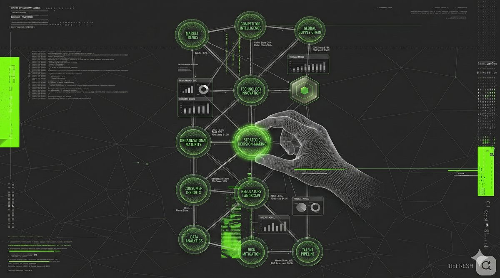

AI Expert, AI Strategy Consultant or AI Business Specialist: Who Do You Need?
AI expert, AI strategy consultant or AI Business Specialist? In Switzerland only one title has rules. Choose by where your AI work is stuck.
Read More →
What AI Consulting Costs in Switzerland
Public Swiss AI consulting prices start around CHF 2,000 for an audit. Why a day rate tells you less than what one decision costs you.
Read More →EU AI Act: What Companies Need to Do Now
The updated EU AI Act timeline, current transparency duties and a practical 30-day action plan for companies in Europe and Switzerland.
Read More →CAIO, Head of AI and the Team Behind AI Growth
What a Chief AI Officer, Head of AI and supporting AI roles should own, which skills they need and how their work can support company growth.
Read More →The One Skill AI Can't Automate: Why Emotional Intelligence Is Your Professional Moat
For twenty years we called them soft skills. Now that AI can out-reason most people on most tasks, emotional intelligence is suddenly the hard moat.
Read More →
How to Build an AI Strategy Before It Builds Itself Without You
Most AI strategies are really AI wishlists. PESTEL analysis and the AI Strategy Canvas are how you tell the difference — and build one that holds up.
Read More →